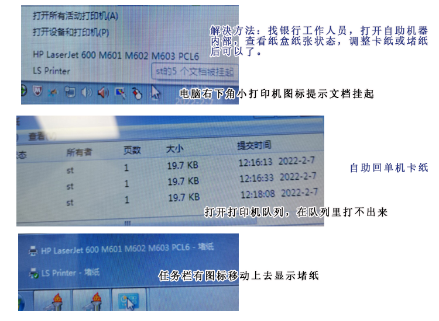

自助对公回单机的部分问题解决方法
现象1：点打印一会后，显示打印已完成，但是回单机没有出纸。进一步测试：重新刷卡登录提示没有需要打印的回单。
（自助回单系统，不显示下方的电脑的任务栏，如果你多测试几次，电脑可能会卡出任务栏，点任务栏里右侧小图标的打印机队列状态查看，可以看到任务都加入队列了，但是打印不出来。）
（任务栏里可能会出现该打印机的报错提示，例如打印机堵纸）
图示：（见本博文最后）
解决方法：联系银行的前台或工作人员，告诉他现象，（打印机在队列里打印不出来，堵纸的提示），工作人员有钥匙可以打开自助机内部，内部有多个纸盒，工作人员观察哪个纸盒的纸有问题（纸某一张翘起来了），重新把纸拿出来放进去，之前队列里的任务就会不断打印出来。
现象2：对公回单机提示：缺纸或纸张类型不匹配，打印异常，以输出XX笔，XX页，剩余回单暂存，请联系管理员，
并提示:打印机实时状态：故障，盖章机实时状态：正常
解决方法：回单机可能没纸了，换个银行找一台有纸的回单机就可以了。（有时候，打之前就没纸了，银行工作人员知道没纸了，进门会告诉你没纸了，可以先去其他银行，或换时间再来）
（该问题，在新回单机上登录，会显示剩下没打印的回单，回单暂存了，不会提示没有回单要打了。）
现象3：打对公回单正常，打对账单明细，提示"无法链接数据...."类似提示，具体提示忘了，
明细打不出来，联系银行工作人员，打也是这样提示，银行工作人员尝试补打上月的明细，打出来的是空的，只有银行标志，没有数据和表格。
进一步测试：换其他银行，多台回单机测试，明细都打不来，提示这个。
解决方法：可能是系统或网络问题，只能下月再打该明细。回单可以正常打。
总方法：打不出来，找银行工作人员，银行工作人员也没办法的一般是系统故障或电脑故障，下次再打或补打；银行工作人员有方法的，打开机器内部解决堵纸等，银行工作人员会处理。
其他： 1.回单机缺纸会报错，并暂存没打印的回单，下次登录或其他终端登录还可以看到没打的回单。
2.但如果是卡纸或堵纸，回单机还是会认为打印成功，估计是加入队列算成功，下次登录会提示没有需要打印的回单，认为已经打过了。
3.点打印，文字消失，有些方框和黑块，卡住不动了，系统故障，其他银行显示没有需要打印的回单，柜台补打，银行下午上班晚，可提前和领导说明，下月柜台补打，补打时可能会要求常用经办人，不过有时也可以通融下，拿回单卡等尝试证明身份
4.明细可以在机器上补打，只有回单能打情况，明细打不出来，可以下月打。
进入队列，打印不出来： 用xps或pdf虚拟打印机测试下，
如果虚拟打印机正常，说明和打印机或打印机驱动有关。排查下电脑和打印机的连线是否正常，重装打印机驱动试试。
进入队列打印不出来，一般和打印机和电脑的连线有问题，或打印机卡纸等问题，进入队列后就交给windows打印服务和打印机驱动了，或咨询下打印机客服。
1.排查打印机连线是否正常，接口是否松动，打印机是否脱机
2.重装打印机驱动试试 3.排查是否有卡纸问题
4.咨询打印机客服
任务进入队列，打印不出来
进入队列后就交给windows打印服务和打印机驱动了，进入队列打印不出来，一般和打印机和电脑的连线有问题，或打印机卡纸等问题，或咨询下打印机客服。
1.排查打印机连线是否正常，接口是否松动
2.排查打印机是否脱机
3.重装打印机驱动试试
4.排查是否有卡纸或堵纸问题
5.咨询打印机客服
进一步测试
去掉纸张语句测试下，
如果去掉自定义纸张语句正常，可能该打印机不支持自定义纸张等导致的。
输出一个简单文本测试下
LODOP.ADD_PRINT_TEXT(0,0,100,20,"文本内容一");
现象1的图示：
